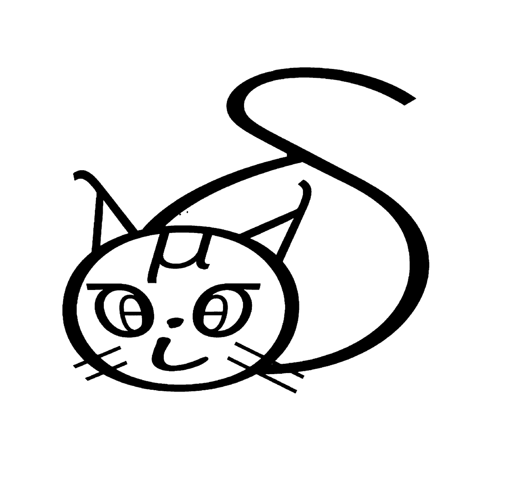

R package providing classes and functions to simulate breeding schemes.
The associated web-site for this package can be found at: https://ut-biomet.github.io/breedSimulatR/
Installation
:octocat: You can install breedSimulatR from GitHub with:
if (!require("devtools")) {
install.packages("devtools")
}
devtools::install_github("ut-biomet/breedSimulatR")You can check the installation with these lines:
library(breedSimulatR)
help(package = breedSimulatR)Example
This is a basic example which shows how to use the package.
The package contains some example data that we will use for this example. These data are stored in the variable exampleData.
exampleData is a list containing 3 elements:
-
exampleData$genotypes:data.framecontaining the genotypic data encoded in allele doses of 100 fictitious individuals with 3333 SNP markers. These individuals have 10 chromosomes of length 10^6 bases pairs. -
exampleData$snpCoord:data.framecontaining the coordinates of the 3333 individuals’ markers. This data.frame contains 3 columns:chr,posandSNPid. -
exampleData$snpEffects:numericvector containing the “true” effects of the 3333 individuals’ markers about a fictitious quantitative trait based on an additive architecture.
Specie specification
Let’s specify the specie:
# create specie object
specie_statEx <- specie$new(specName = "Statisticae exempli",
nChr = 10,
lchr = 1e6,
lchrCm = 100)
#> A new species has emerged: Statisticae exempli !SNP specification
We must specify the information about the positions of the genotypic markers used in the simulation.
Let’s load these information (stored in exampleData$snpCoord) and create the SNPinfo object.
# data preview
head(exampleData$snpCoord)
#> chr physPos linkMapPos SNPid
#> 2 Chr01 937638 86.81546 snp03760
#> 6 Chr01 654763 56.51842 snp02674
#> 10 Chr01 181658 30.62157 snp00721
#> 18 Chr01 230126 35.47120 snp00948
#> 26 Chr01 420637 46.98455 snp01620
#> 29 Chr01 467620 48.80905 snp01790
# create SNPinfo object
SNPs <- SNPinfo$new(SNPcoord = exampleData$snpCoord,
specie = specie_statEx)
print(SNPs)
#> specie: Statisticae exempli
#> 3333 Markers on 10 chromosomes :
#> Chr01 Chr02 Chr03 Chr04 Chr05 Chr06 Chr07 Chr08 Chr09 Chr10
#> 415 247 425 322 381 269 238 355 342 339
#> SNPcoord:
#> chr SNPid physPos linkMapPos
#> snp00006 Chr01 snp00006 2068 0.4911687
#> snp00009 Chr01 snp00009 2708 0.6423784
#> snp00011 Chr01 snp00011 2782 0.6598378
#> snp00018 Chr01 snp00018 4159 0.9838113
#> snp00026 Chr01 snp00026 6917 1.6275084
#> snp00031 Chr01 snp00031 7814 1.8353769
#> [ reached 'max' / getOption("max.print") -- omitted 3327 rows ]Population initialization
We can now generate an initial population from genotypic data.
Let’s load the genotypic information (stored in exampleData$genotypes) and create the population object:
# data preview
exampleData$genotypes[1:3,1:5]
#> snp00006 snp00009 snp00011 snp00018 snp00026
#> Coll0001 2 2 2 0 2
#> Coll0002 0 2 2 2 0
#> Coll0003 2 2 2 0 2
# create population object
initPop <- createPop(geno = exampleData$genotypes,
SNPinfo = SNPs,
popName = "Initial population")Traits and phenotyping initialization
Let’s create 2 independent phenotypic traits that can be phenotyped.
nQtn <- 1000
qtn <- sample(names(initPop$maf > 0.1), nQtn)
weight <- trait$new(name = "Weight",
qtn = qtn,
qtnEff = rnorm(nQtn, 0, 0.35))
qtn <- sample(names(initPop$maf > 0.1), nQtn)
height <- trait$new(name = "Height",
qtn = qtn,
qtnEff = rnorm(nQtn, 0, 0.25))
phenolab <- phenotyper$new(name = "Pheno lab",
traits = list(weight, height),
plotCost = 150,
mu = c(100, 75),
he = c(0.4, 0.6),
pop = initPop)
pheno <- phenolab$trial(pop = initPop, rep = 4)
head(pheno$data)
#> ind Weight Height rep phenotyper
#> 1 Coll0001 125.51295 83.75159 1 Pheno lab
#> 2 Coll0001 113.00704 67.41127 2 Pheno lab
#> 3 Coll0001 92.74805 68.17246 3 Pheno lab
#> 4 Coll0001 99.54966 70.02556 4 Pheno lab
#> 5 Coll0002 118.49684 65.84139 1 Pheno lab
#> [ reached 'max' / getOption("max.print") -- omitted 1 rows ]
print(pheno$cost)
#> [1] 60000Selection Simulation
In order to perform crossing, we must specify which individuals must be mate together. Therefore, we must create functions which generate a crossing table from our population.
For this example, we will use the function selectBV, which returns the names of the best individuals according to their breeding values.
Then, the function randomMate will generate the crossing table.
exampleData$snpEffects
#> snp00006 snp00009 snp00011 snp00018 snp00026 snp00031
#> 0.051109298 0.080992331 0.183532594 0.028194339 0.144136946 -0.044546216
#> snp00035 snp00036 snp00049 snp00052 snp00075 snp00076
#> -0.065193108 0.043784786 0.152643726 -0.198029104 0.066515171 -0.231082616
#> snp00087 snp00101 snp00102 snp00103 snp00111 snp00113
#> 0.008411049 0.016470385 -0.029577718 0.157991987 -0.073798339 0.045285975
#> snp00116 snp00117 snp00130 snp00131 snp00141 snp00144
#> 0.022954650 0.041486485 -0.087808853 0.135689743 0.077546360 0.086486365
#> snp00145
#> 0.072675256
#> [ reached getOption("max.print") -- omitted 3308 entries ]
(selectedInds <- selectBV(pop = initPop,
QTNeffects = exampleData$snpEffects,
n = 10))
#> [1] "Coll0068" "Coll0008" "Coll0074" "Coll0016" "Coll0020" "Coll0045"
#> [7] "Coll0079" "Coll0002" "Coll0046" "Coll0097"
(crossTable <- randomMate(inds = selectedInds,
n = 120,
names = "generation_1"))
#> ind1 ind2 n names
#> 1 Coll0046 Coll0097 1 generation_1-001
#> 2 Coll0068 Coll0097 1 generation_1-002
#> 3 Coll0074 Coll0020 1 generation_1-003
#> 4 Coll0008 Coll0008 1 generation_1-004
#> 5 Coll0097 Coll0097 1 generation_1-005
#> 6 Coll0097 Coll0074 1 generation_1-006
#> [ reached 'max' / getOption("max.print") -- omitted 114 rows ]We can now generate the offspring:
newPop <- population$new(name = "1st offspring",
inds = makeCrosses(crosses = crossTable, pop = initPop))
newPop
#> Population: 1st offspring
#> Species: Statisticae exempli
#> Number of individuals: 120This process can be included in loops in order to simulate several generations.
Issues
When encountering a problem with the package or if you have questions, please report issues on GitHub here.
I will do my best to help you as soon as possible.
Contributing
You can contribute in various ways:
- report an issue (online, see the above section)
- suggest improvements (in the same way as issues)
- propose a pull request (after creating a new branch)
When editing the content of this package, please run the following commands before asking a pull request:
devtools::document()
pkg <- devtools::build()
devtools::check_built(pkg)Citation
Please cite this package when using it for your projects:
citation("breedSimulatR")See also citation() for citing R itself.
Acknowledgments
Thanks to Kosuke Hamazaki for his feedbacks.
References
breedSimulatR is written in R:
- R Core Team (2021).R: A Language and Environment for Statistical Computing.R Foundation for Statistical Computing, Vienna, Austria.https://www.R-project.org/.
breedSimulatR package or its development required the following R packages:
-
base
- R Core Team (2021).R: A Language and Environment for Statistical Computing.R Foundation for Statistical Computing, Vienna, Austria.https://www.R-project.org/.
-
data.table
- Dowle M, Srinivasan A (2021).data.table: Extension of ‘data.frame’.R package version 1.14.2, https://CRAN.R-project.org/package=data.table.
-
R6
- Chang W (2021).R6: Encapsulated Classes with Reference Semantics.R package version 2.5.1, https://CRAN.R-project.org/package=R6.
-
stats
- R Core Team (2021).R: A Language and Environment for Statistical Computing.R Foundation for Statistical Computing, Vienna, Austria.https://www.R-project.org/.
-
tools
- R Core Team (2021).R: A Language and Environment for Statistical Computing.R Foundation for Statistical Computing, Vienna, Austria.https://www.R-project.org/.
-
vcfR
- Knaus BJ, Grünwald NJ (2017).“VCFR: a package to manipulate and visualize variant call format data in R.”Molecular Ecology Resources, 17(1), 44–53.ISSN 757, http://dx.doi.org/10.1111/1755-0998.12549.
- Knaus BJ, Grünwald NJ (2016).“VcfR: an R package to manipulate and visualize VCF format data.”BioRxiv.http://dx.doi.org/10.1101/041277.
-
covr
- Hester J (2022).covr: Test Coverage for Packages.R package version 3.6.1, https://CRAN.R-project.org/package=covr.
-
devtools
- Wickham H, Hester J, Chang W, Bryan J (2022).devtools: Tools to Make Developing R Packages Easier.R package version 2.4.5, https://CRAN.R-project.org/package=devtools.
-
gaston
- Perdry H, Dandine-Roulland C (2020).gaston: Genetic Data Handling (QC, GRM, LD, PCA) & Linear Mixed Models.R package version 1.5.7, https://CRAN.R-project.org/package=gaston.
-
knitr
- Xie Y (2022).knitr: A General-Purpose Package for Dynamic Report Generation in R.R package version 1.41, https://yihui.org/knitr/.
- Xie Y (2015).Dynamic Documents with R and knitr, 2nd edition.Chapman and Hall/CRC, Boca Raton, Florida.ISBN 978-1498716963, https://yihui.org/knitr/.
- Xie Y (2014).“knitr: A Comprehensive Tool for Reproducible Research in R.”In Stodden V, Leisch F, Peng RD (eds.), Implementing Reproducible Computational Research.Chapman and Hall/CRC.ISBN 978-1466561595, http://www.crcpress.com/product/isbn/9781466561595.
-
pkgdown
- Wickham H, Hesselberth J, Salmon M (2022).pkgdown: Make Static HTML Documentation for a Package.R package version 2.0.6, https://CRAN.R-project.org/package=pkgdown.
-
plotly
- Sievert C (2020).Interactive Web-Based Data Visualization with R, plotly, and shiny.Chapman and Hall/CRC.ISBN 9781138331457, https://plotly-r.com.
-
rmarkdown
- Allaire J, Xie Y, McPherson J, Luraschi J, Ushey K, Atkins A, Wickham H, Cheng J, Chang W, Iannone R (2022).rmarkdown: Dynamic Documents for R.R package version 2.18, https://github.com/rstudio/rmarkdown.
- Xie Y, Allaire J, Grolemund G (2018).R Markdown: The Definitive Guide.Chapman and Hall/CRC, Boca Raton, Florida.ISBN 9781138359338, https://bookdown.org/yihui/rmarkdown.
- Xie Y, Dervieux C, Riederer E (2020).R Markdown Cookbook.Chapman and Hall/CRC, Boca Raton, Florida.ISBN 9780367563837, https://bookdown.org/yihui/rmarkdown-cookbook.
-
roxygen2
- Wickham H, Danenberg P, Csárdi G, Eugster M (2022).roxygen2: In-Line Documentation for R.R package version 7.2.2, https://CRAN.R-project.org/package=roxygen2.
-
spelling
- Ooms J, Hester J (2020).spelling: Tools for Spell Checking in R.R package version 2.2, https://CRAN.R-project.org/package=spelling.
-
testthat
- Wickham H (2011).“testthat: Get Started with Testing.”The R Journal, 3, 5–10.https://journal.r-project.org/archive/2011-1/RJournal_2011-1_Wickham.pdf.
Example data were generated using the serious game “PlantBreedGame” available on GitHub https://github.com/timflutre/PlantBreedGame
-
PlantBreedGame
- Flutre T, Diot J, and David J (2019). PlantBreedGame: A Serious Game that Puts Students in the Breeder’s Seat. Crop Science. DOI 10.2135/cropsci2019.03.0183le
License and copyright ©️
The breedSimulatR package as a whole is licensed under the MIT. See the LICENSE.md file for more details.
©️ The copyright holder is The University of Tokyo, Laboratory of Biometry and Bioinformatics.
